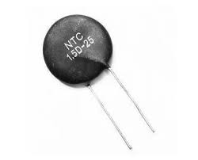
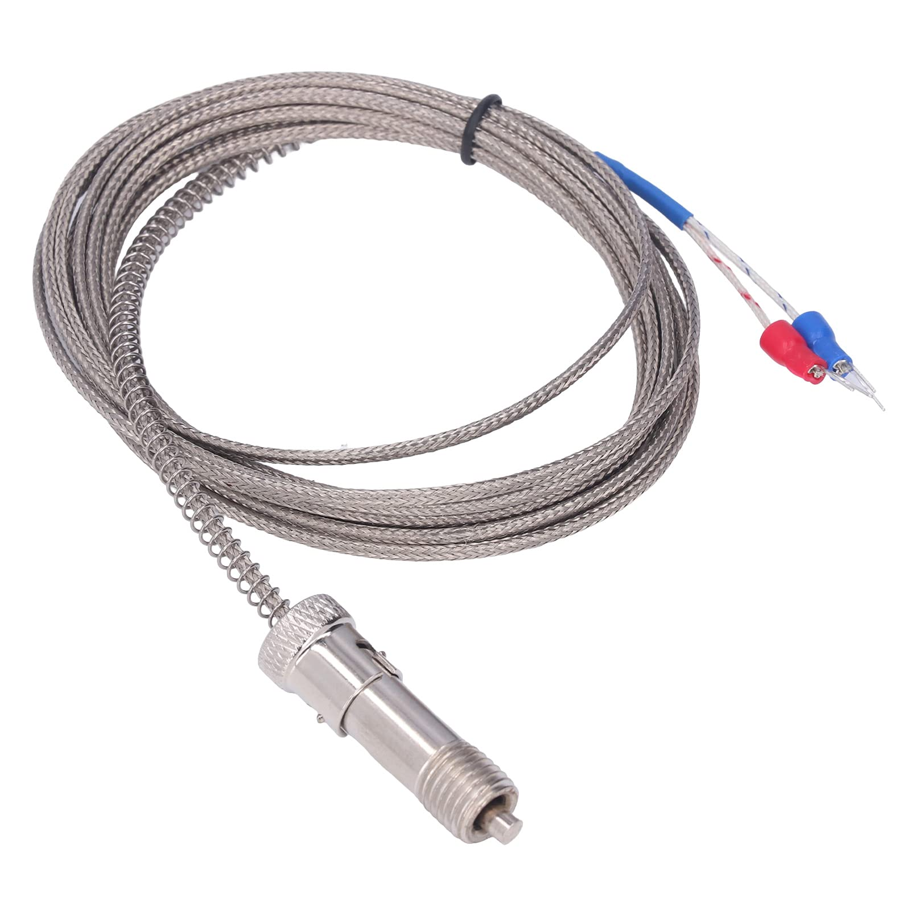
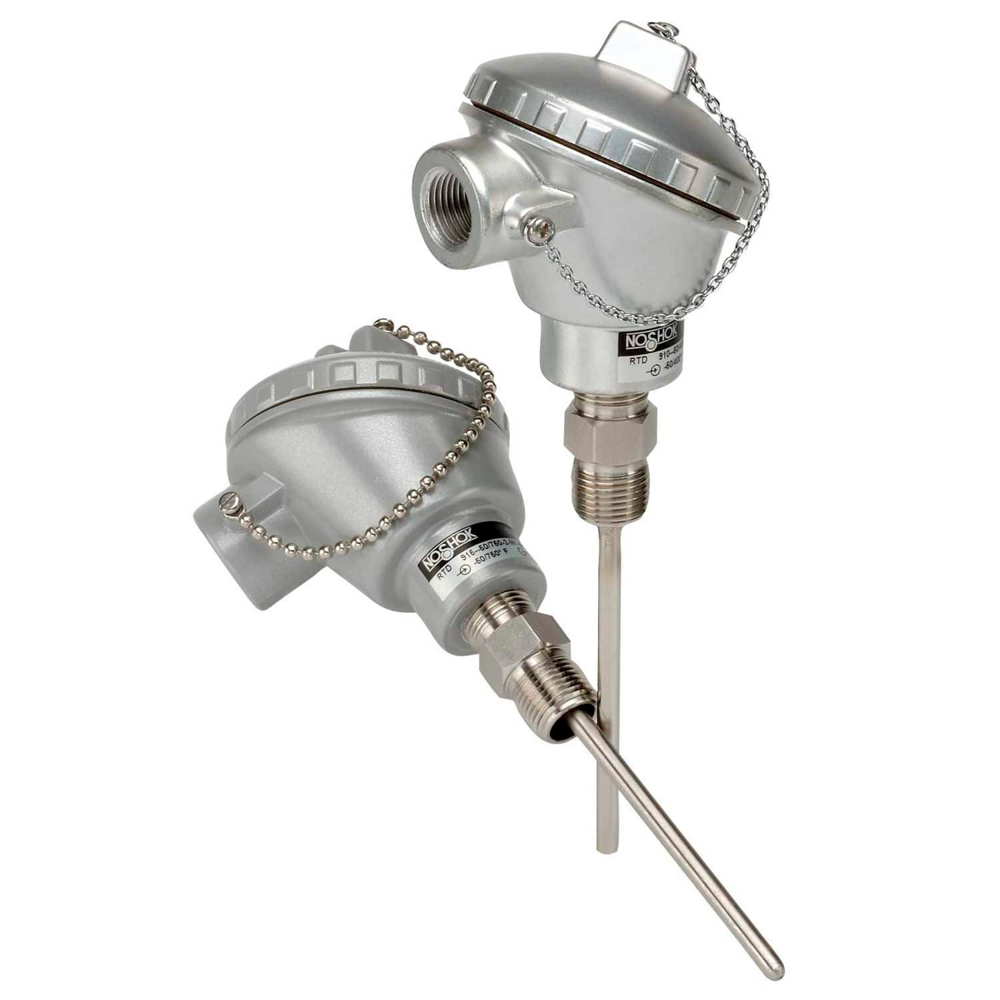
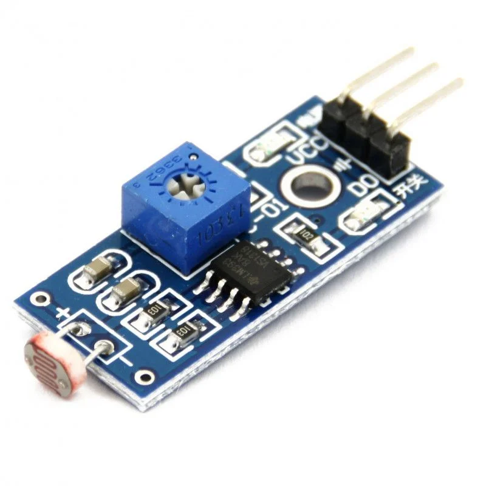
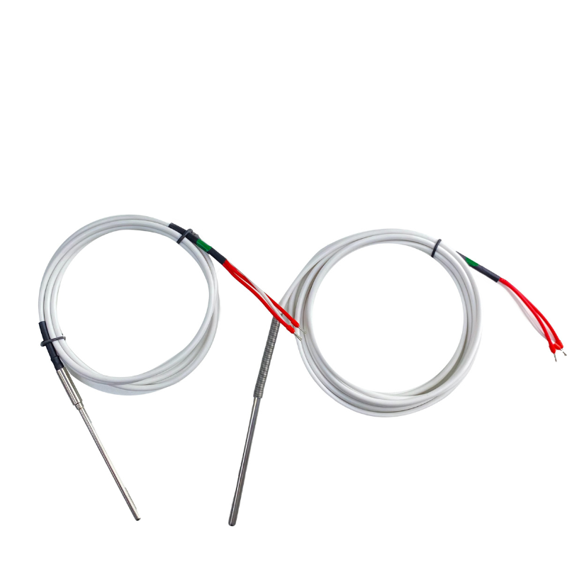

Sensores
Sensores de temperatura
O que são?
São sensores que convertem a variação termica em sinais elétricos, alguns dos tipos mais comuns são : Termopares - Termoresistências - Termistores - Circuitos integrados
Termistores Sensores que tem base em semicondutores que mudam a resistência com a temperatura

Termopares É composto por dois metais diferentes que geram uma tensão pequena, proporcional a mudança da temperatura. Alguns tipos são : Tipo K, comum resistênte e versátil, com uma faixa de -200°c até 1260°C, para usos indústriais, fornos e motores. - Tipo J, Boa precisão e mais barato, mede de -40°C até 750°C, para equipamentos industriais mais simples. - Tipo T, Alta precisão em baixas temperaturas, uso para laboratório e refrigeração, mede de -200°C até 350°C

Termoresistência Feito de metais como platina, que alteram a resitência linearmente, com alta precisão de estabilidade

Exemplo de medição em termopar tipo K
Como escolher um sensor de temperatura?
A escolha de um sensor de temperatura deve considerar principalmente a faixa de medição (escala), garantindo que suporte as temperaturas do processo com segurança. Também é importante avaliar a precisão, o tempo de resposta e as condições do ambiente. Além disso, devem ser analisados o tipo de saída e o custo. Esses fatores garantem medições confiáveis e adequadas à aplicação.

Sensor de cor

Sensor de vibração

Sensor LDR

Sensor ultrassonico

Sensor NTC / PTC

Atuador relé